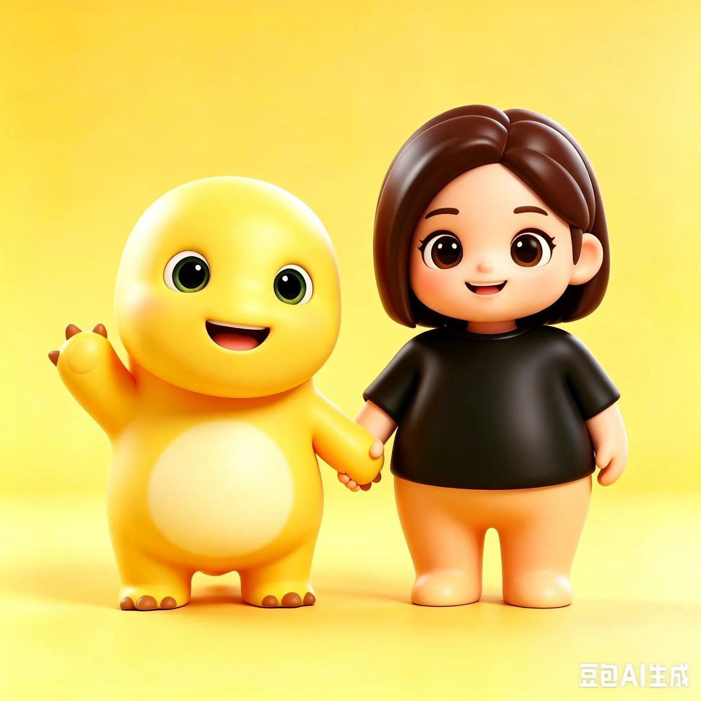
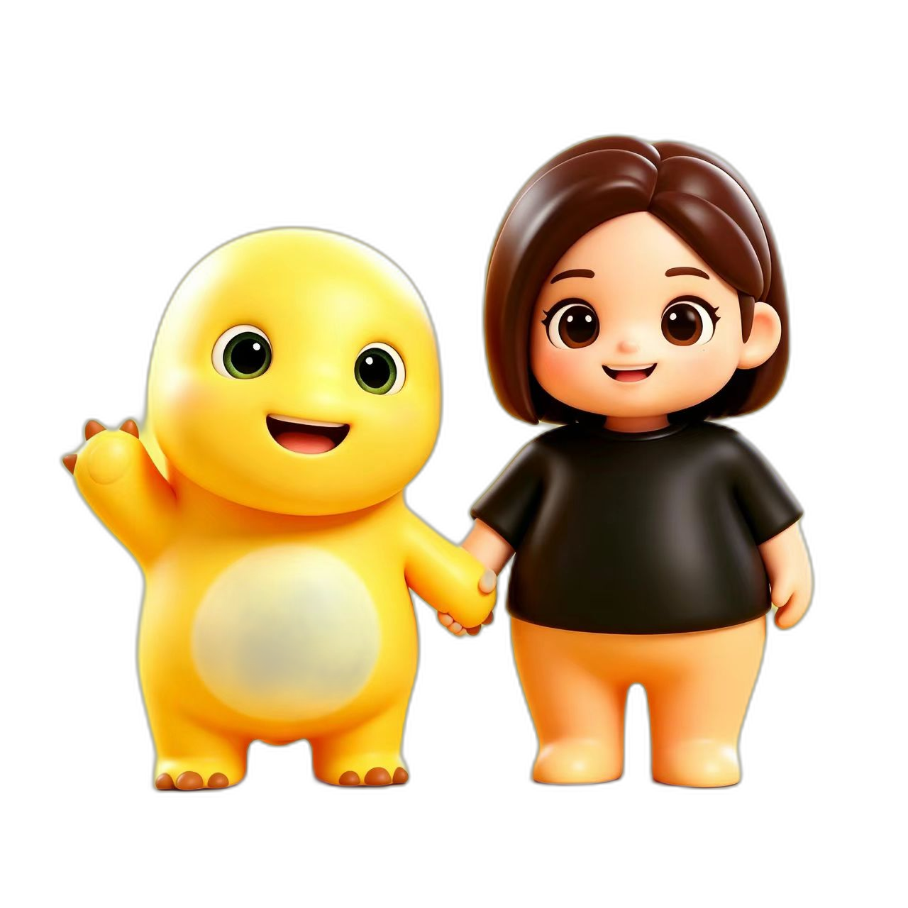

🔗 推理链路概览
1背景去除
把 RGB 图抠成 RGBA，pipeline 看到 alpha 通道就跳过内置 BiRefNet，避免抠图边界引入噪声。
rembg / u2net2图像编码
DINOv3 ViT-L/16 提取语义特征作为条件，512×512 输入 → 1024 patch tokens。
camenduru/dinov3-vitl16-pretrain-lvd1689m3稀疏结构生成
第一阶段 Flow DiT 生成 64³ 稀疏体素占据，定位 3D 资产的粗略形状。
SS Flow · 1.3B · 12 steps4形状细化 + 纹理
两个 SLat Flow DiT：第一个把稀疏结构升采样到 512³ 形状 latent；第二个生成 PBR 贴图 latent。
Shape SLat + Texture SLat · 1.3B 各一5SC-VAE 解码 + Mesh 化
Sparse Conv VAE 解码到 O-Voxel，Dual Contouring 提网格，再 remesh / decimate / xatlas UV / 烘焙贴图 → GLB。
o-voxel · CuMesh · nvdiffrast📦 复现命令 & 环境要点
关键依赖：python 3.10 · torch 2.6.0+cu124 · flash-attn 2.7.3 ·
nvdiffrast 0.4.0 · nvdiffrec_render · flex_gemm ·
cumesh · o_voxel。CuMesh 编译要求 CUDA Toolkit ≥ 12.4（系统自带的 12.1 会因 CUB tuple 类型不完整报错）。
从这张图生成 3D 的完整脚本：run_doubao_rgba.py，时间消耗（A100×1）：
1. rembg/u2net 抠图 ~3s 2. DINOv3 + SS Flow ~5s 3. Shape SLat (512³) ~20s 4. Texture SLat ~10s 5. 视频渲染 (120 帧) ~38s 6. Mesh 后处理 (remesh+UV+烘焙) ~80s ───────────────────────────────── 总计 ~5–8 min
因为 facebook/dinov3-vitl16-pretrain-lvd1689m 和 briaai/RMBG-2.0 是 gated repo，
当前 demo 用了两处镜像替换：
facebook/dinov3-vitl16-pretrain-lvd1689m→camenduru/dinov3-vitl16-pretrain-lvd1689mbriaai/RMBG-2.0→ZhengPeng7/BiRefNet（pipeline 内置使用）；本页 demo 又额外用rembg/u2net预抠图以提升一致性。
另外因为新版 transformers 把 DINOv3 的 layers 挪到了 .model.model.layer，
在 image_feature_extractor.py 里加了一个 fallback 探测。
🧩 模型架构简述（点开展开）
TRELLIS.2 的核心是把 3D 表征统一成 O-Voxel（field-free sparse voxel）：
- SC-VAE：用 16× 空间下采样的 sparse 3D VAE 把网格压成紧凑的稀疏 latent（shape + texture 两路）。
- 三阶段 Flow Matching：先生成 64³ 稀疏占据，再升采样到 512³ 的 shape latent，最后条件生成 texture latent。
- O-Voxel 解码：CUDA 后处理把 latent 直接转成带 baseColor / roughness / metallic / opacity 的 PBR 网格， 整个 mesh ↔ voxel 转换是 rendering-free / optimization-free 的：单 CPU 网格 → O-Voxel < 10s，CUDA 反向 < 100ms。
这个 demo 跑的是 microsoft/TRELLIS.2-4B，输出分辨率 512³（约 3s 形状 + 1s 材质 on H100；A100 略慢）。